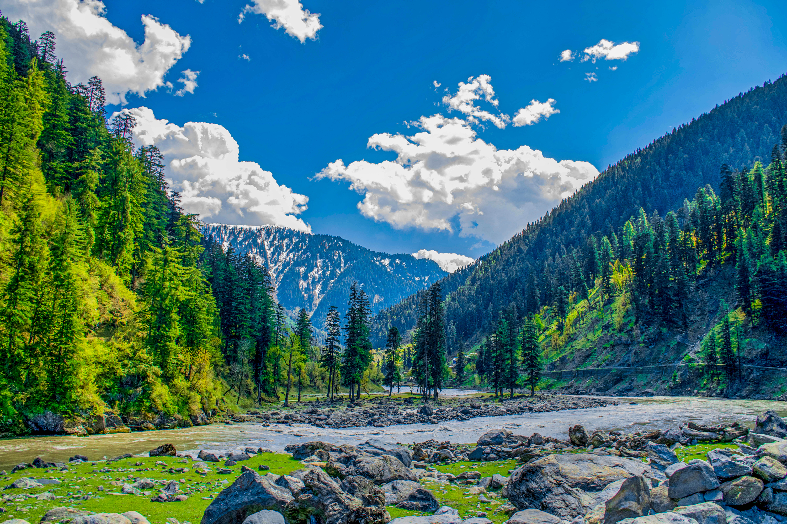
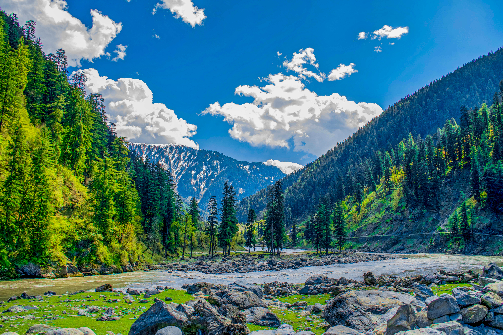

Pakistan, a country nestled in South Asia, is a land of breathtaking landscapes, rich cultural heritage, and warm hospitality. From the towering peaks of the Himalayas to the vibrant bazaars of its cities, Pakistan offers a diverse tapestry of experiences that captivate locals and tourists alike. Let take a journey through this remarkable country to explore its key features.
Natural Wonders
One of Pakistan’s most striking features is its natural beauty. The country is home to some of the world’s highest mountain ranges, including the Himalayas, the Karakoram, and the Hindu Kush. The majestic K2, the second-highest peak in the world, attracts climbers and adventurers from all over the globe.
 

In contrast to the towering mountains, the serene valleys of Hunza, Swat, and Neelum offer lush greenery, crystal-clear rivers, and picturesque views. The vast Thar Desert and the sprawling Indus River Delta showcase the country’s geographical diversity. Wildlife sanctuaries, such as Hingol National Park, provide a haven for unique species and stunning landscapes. Learn more about Natural Wonders
Cultural Richness
Pakistan is a melting pot of cultures, languages, and traditions. With over 70 spoken languages, including Urdu, Punjabi, Sindhi, Pashto, and Balochi, the country celebrates linguistic diversity. Each province has its unique cultural identity, expressed through traditional music, dance, attire, and cuisine.
Festivals such as Eid-ul-Fitr, Eid-ul-Adha, Basant, and Shandur Polo Festival bring people together in joyous celebrations. Pakistani cuisine, famous for its rich flavors and aromatic spices, includes delicacies like biryani, kebabs, and nihari, leaving a lasting impression on food enthusiasts. Learn more about Pakistani Culture
Historical and Architectural Heritage
Pakistan’s history spans thousands of years, leaving behind a legacy of architectural marvels. The ancient city of Mohenjo-Daro, part of the Indus Valley Civilization, is a UNESCO World Heritage Site and one of the earliest examples of urban planning. Learn more about Historical and Architectural Heritage
The Mughal Empire’s influence is evident in iconic structures like the Badshahi Mosque, Lahore Fort, and Shalimar Gardens in Lahore. The intricate craftsmanship and grandeur of these sites are a testament to Pakistan’s artistic heritage. The contemporary Faisal Mosque in Islamabad blends modernity with tradition, symbolizing the nation’s Islamic identity.
Warm Hospitality
Pakistanis are renowned for their hospitality and generosity. Visitors often speak of the kindness and warmth extended to them by locals. Whether you’re exploring the bustling streets of Karachi, the cultural hubs of Lahore, or the scenic villages of the northern areas, you will find a welcoming smile and a cup of chai awaiting you.
Economic Potential
Pakistan’s strategic location makes it a vital player in regional trade and connectivity. The China-Pakistan Economic Corridor (CPEC) is transforming the country’s infrastructure and opening up new opportunities for investment and development. Industries such as textiles, agriculture, and technology are vital contributors to the nation’s economy.
Challenges and Resilience
Despite its many strengths, Pakistan faces challenges such as political instability, economic disparity, and environmental concerns. However, the resilience and determination of its people continue to drive progress and hope for a brighter future.
Conclusion
Pakistan is a land of contrasts and harmony, where natural wonders coexist with a vibrant cultural mosaic. It is a country that inspires awe with its beauty, respect with its history, and affection with its hospitality. For those seeking adventure, history, or simply a deeper understanding of South Asia, Pakistan offers an experience like no other.
Whether you are a traveler, a historian, or a cultural enthusiast, Pakistan’s allure is undeniable. Plan a visit and discover the wonders of this extraordinary nation. For more if you want to know about Pakistan Click here